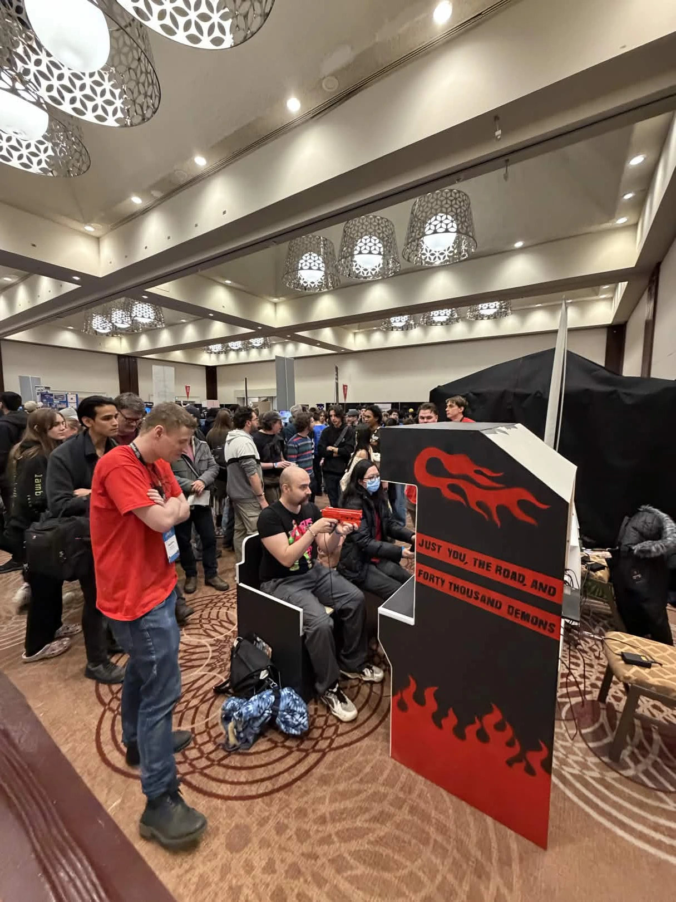
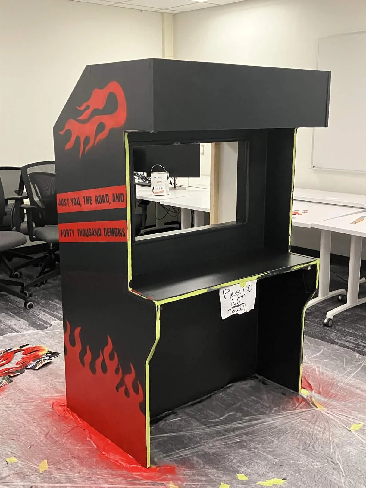

Riding Shotgun
MADE WITH
MADE WITH
Riding Shotgun is a hectic car combat game. Where players commandeer the Crimson Crucible, driving and shooting across the Mojave mowing down hordes of relentless demons.


This project was originally started as a co-op arcade shooter,
where one player drives while another handles the shooting.
However, after receiving positive feedback from internal playtests
using the developer’s single-player controls, the group collectively
decided to adapt the game into a single-player experience for a Steam release.
As the group’s lead programmer, I developed several of the game’s essential technologies,
including input management, gameplay systems, game mechanics, user interface,
engine tools, and graphics shaders. I even contributed to some of the carpentry
work involved in bringing the project to life.


Riding Shotgun was my first experience shipping a project from start to finish.
Without this project, I would not have gained hands-on experience with Unity’s
built-in CI/CD tools, the Steamworks API, or many of the business and production
aspects of game development.
This project gave me the opportunity to develop not only my technical skills but also a deeper
understanding of what it takes to bring a game from an initial concept to a completed release.